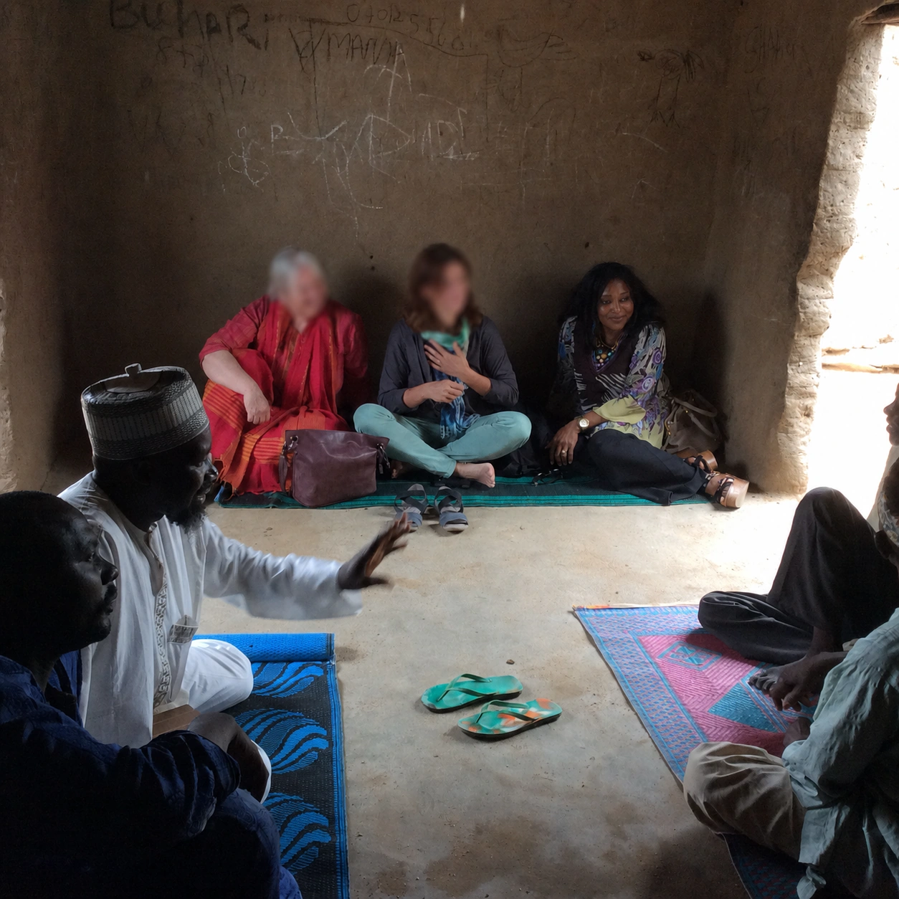

Approach
Knowledge translation is built into evaluations so findings move from report into decision-making.
ENAULD provides research, monitoring, evaluation and learning services to the health sector, working with knowledge institutes, governments, UN agencies and international organizations.

ENAULD Technology Health Research and Services was established in November 2010 as ENAULD Health Research and Services. In October 2021 the company restructured to integrate a technology component, reflecting the growing role of data and information systems in evaluation work.
ENAULD's evaluations are designed and delivered by a multidisciplinary team with experience across health systems strengthening, primary health care, immunization, maternal and child health, WASH, education, health financing and governance.
Work is grounded in mixed methods, combining quantitative data with qualitative inquiry to capture the perspectives of policy makers, implementers and the people programmes are meant to serve.
Knowledge translation is built into evaluations so findings move from report into decision-making.
Experience includes the World Bank, UNICEF, WFP, WHO, Gavi, 3ie, BMGF, Shell and national governments.
Evaluations combine impact evaluation, theory-based inquiry, evidence synthesis and primary data collection.
ENAULD works across health research and services, alongside information management and technology strategy.
Evaluation, monitoring, learning and capacity-building services for the health sector.
Information systems and management strategy for organizations operating in fast-changing environments.
Dr. Akwataghibe leads and advises on complex evaluations, policy-relevant research and learning initiatives for multilateral organizations, governments and global partnerships.
Her work covers evaluation design, implementation and quality assurance, including impact evaluations, theory-based and mixed-methods evaluations, MEL systems and adaptive learning frameworks.
She has led evaluations commissioned by the World Bank, UNICEF, WFP, WHO, Gavi, 3ie, the Bill & Melinda Gates Foundation, Shell and other global partners.
PhD thesis, 2024. ISBN 9789464734355.
PLoS One, 2022.
Health Research Policy and Systems, 2021.
Frontiers in Public Health, 2019.
3ie Formative Evaluation Report, 2019.
Journal of Water, Sanitation and Hygiene for Development, 2018.
UNICEF, 2021.
Applied Health Economics and Health Policy, 2020.
Conflict and Health, 2018.
International Health, 2016.
Government of Nigeria and UNICEF, 2014.
BMC Health Services Research, 2013.
BMC Medical Education, 2013.
Get in touch to discuss research, evaluation, MEL, evidence synthesis, knowledge translation or information management technology needs.